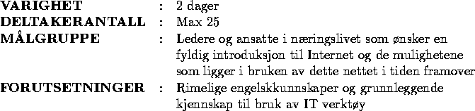

Oslonett AS og Intervett AS tilbyr med dette et 2 dagers introduksjonskurs til Internet. Kurset vil presentere Internettets historie samt de enkelte tjenestene som finnes på nettet, og vil spesielt fokusere på hvordan Internettet kan brukes som et strategisk verktøy for bedrifter innenfor alle mulige forretningsområder. Dette vil bli belyst gjennom eksempler og online demonstrasjoner. Det vil bli satt av god tid til demonstrasjoner og selvøvelser.


Internet historikk - herunder opphav, utbredelse, eierstrukturer, prissetting, ``Acceptable Use'' regelverk (i den grad slikt fortsatt eksisterer). Hva slags firmaer er tilknyttet Internet i dag, i Norge og i utlandet.
De grunnleggende Internet informasjonstjenestene blir forklart. Dette inkluderer elektronisk post (email), nyhetsgrupper (News), filoverførsel (FTP), fjernlogin (Telnet) samt de mer moderne informasjonsrammeverkene Gopher, WAIS og World Wide Web (WWW). Det vil bli lagt spesielt vekt på WWW, og det vil bli vist hvordan WWW favner de fleste av de andre systemene som blir gjennomgått.
Programmer for bruk av elektronisk post (Eudora) og World Wide Web (Netscape) blir gjennomgått og demonstrert.
Det blir nå vist hvordan man finner fram på Internettet via World Wide Web og programmet Netscape, og deltagerne får så en rekke oppgaver som skal ``løses'' utelukkende vha. Internettet - vi kaller dette ``Internet Hunt''.
Forskjellig behov til ytelse og tilgjengelighet gir forskjellige tekniske løsninger når det gjelder tilknytning. Problemer rundt ``båndbreddegaranti'' på Internet. Sikkerhet i tilknytning til bedriftens interne datasystemer - prinsipper for såkalte ``brannvegger''.
Vi fortsetter å ``surfe'' på nettet, og vi vil nå jakte på informasjon om temaer som hver enkelt deltager foreslår.
Trender og tendenser i samfunnsutviklingen. Kybersamfunnet som grunnlag for forretningsmessig forståelse.
Nye typer interaksjoner med kunder og forretningspartnere. Markedsføringen står foran et paradigmeskifte. Eksempler på tjenester som er kommersialisert og hvor Internet blir uslåelig som kanal:
Computerworlds Web publisering hos Oslonett AS.
Arctic Adventours online katalog i Web vises. Kjøper man virkelig produkter til 13.000.- via Internettet?
Det vil bli snakket rundt nye muligheter for produkter og produktideer med ytterligere demoer, basert på deltakernes ønsker og interessefelt.